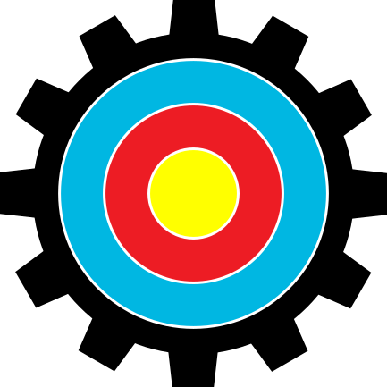

跳至主要內容

Archery
NYCU ARCHERY SYSTEM
首頁
比賽列表
我的比賽
登入
近期比賽
示例資料 · 僅供版面預覽
查看全部比賽
校際新生盃射箭邀請賽
新生組
查看記分板
登入以加入比賽
秋季校隊排名賽
校隊組
查看記分板
登入以加入比賽
北區大專射箭交流賽
公開組
查看記分板
登入以加入比賽
登入帳號
登入後可進入您的比賽工作區。
×
設計預覽，請使用示例帳號與密碼。
帳號
密碼
登入（示意）
還沒有帳號？
建立帳號
比賽資料
設計預覽
×
了解